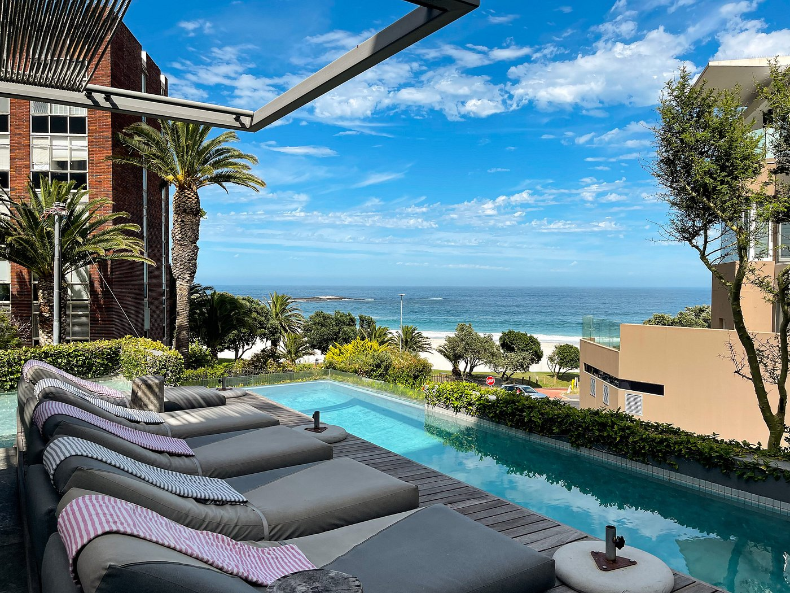
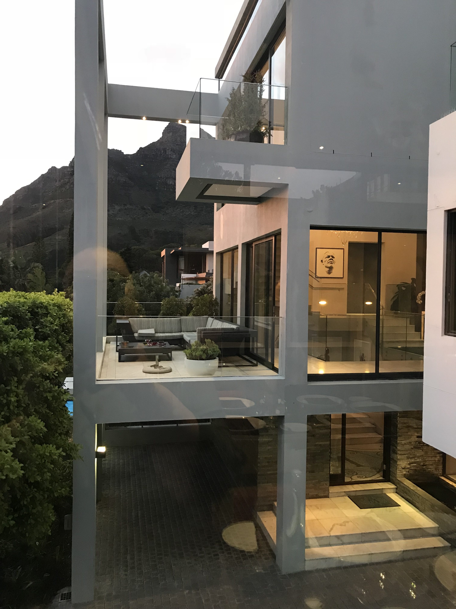
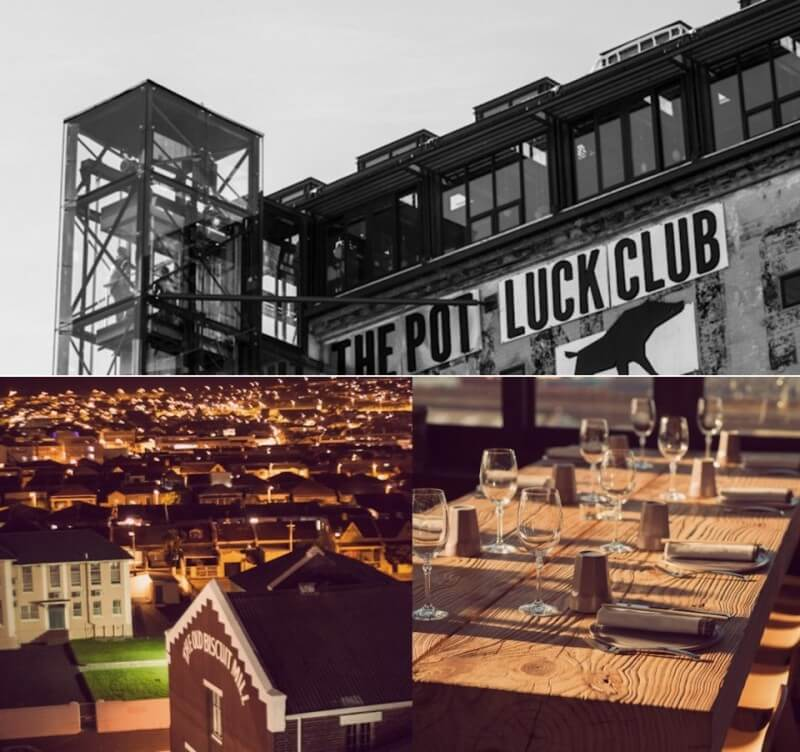
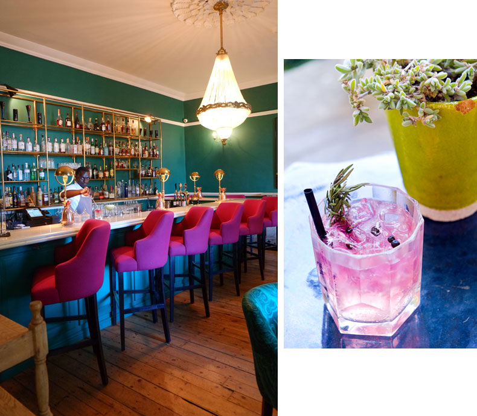
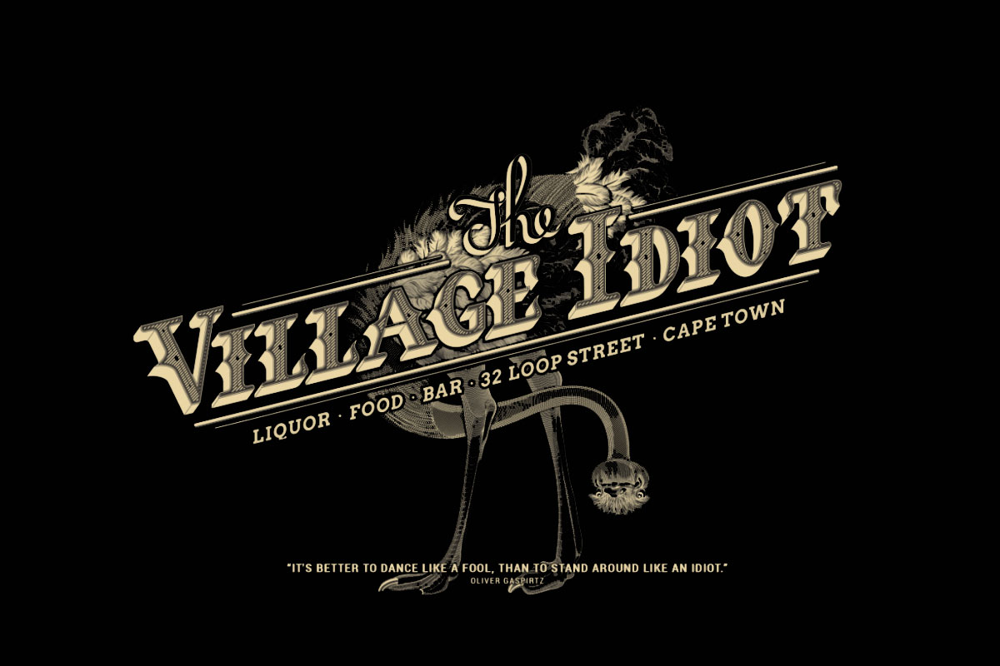

South Africa
Cape Town
What to Expect
Language: South Africa has got eleven official languages, with English being the most commonly spoken in and around Cape Town particularly in touristy areas. Afrikaans and Xhosa are also frequently heard on the streets.
Currency: The official currency in South Africa is the Rand.
Safety: Cape Town is one of the safer cities in South Africa, but there are still some petty crimes. Be sure to lock up your valuables and keep important belongings on your person (Be aware of PickPockets).
In terms of Travel the best and cost-effective way to travel is Uber and My CitiBus.


Where To Stay
Pod Camps Bay
POD Camps Bay stands as a remarkable boutique hotel, strategically positioned right on the shores of Camps Bay beach! Within walking distance to a variety of restaurants and bars, it boasts an exceptional breakfast.
MannaBay
MannaBay, an elegant hotel adorned with diverse decor, features a captivating swimming pool, a cozy fire pit, and breathtaking views of Cape Town. The generously sized rooms come complete with spacious bathrooms, walk-in showers, and under-floor heating—an ideal recipe for a heavenly stay!.
VRBO Rentals
Cape Town offers an abundance of VRBO rentals, presenting beautiful properties at budget-friendly rates! If you prioritize privacy or wish to delve into more local neighborhoods of the city, consider renting a charming apartment or villa near the beach.


Where To Eat!
Breakfast & Brunch
Loading Bay
Loading Bay is a lovely spot for a quick morning meal. Their menu features health-conscious options like granola and spiced buckwheat pancakes.

Pot Luck
Pot Luck Club is known as the trendiest spot in Cape Town. Its success lies in innovative cuisine served within a relaxed yet edgy setting.
Lunch & Dinner
The Stack
Recognized as one of the top restaurants in Cape Town, The Stack offers an incredible atmosphere, with charming decor and a delightful bar area.
Bombay Bicycle
If you're seeking a unique dining adventure, reserve a table at Bombay Bicycle Club. With its bohemian ambiance, delectable menu, and colorful history, it stands out as one of Cape Town's finest dinner destinations.

Clubs & Bars
Secret Gin
Secret Gin Bar is adorned with fairy lights and eclectic decor, it's one of my preferred spots for enjoying drinks with friends.

The Village Idiot
For a local watering hole experience, visit The Village Idiot, a vintage bar and restaurant nestled in the heart of Cape Town's CBD.
